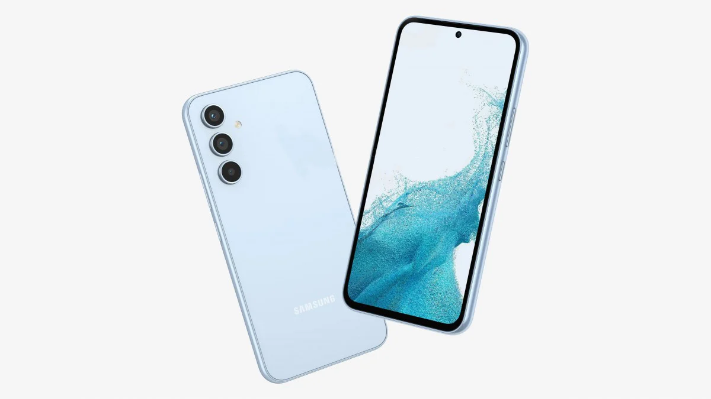

Samsung Galaxy A54: Peculiarmente llamado gama media

La familia S se erige como el mascarón de proa dentro del catálogo de Samsung, pero es la gama inferior, la familia A, la que termina acumulando un mayor número de ventas. Y hay una pareja de smartphones abonada al podio de los comercios: el Samsung Galaxy A34 y el móvil que nos ocupa, el Samsung Galaxy A54. Me ha sorprendido lo bien que funciona el teléfono.
Es difícil denominarlo como gama media dado el precio que tiene, tampoco por características lo es: el Samsung Galaxy A54 pertenece por derecho propio a una gama alta más o menos «accesible». La marca lleva al teléfono gran parte de la experiencia obtenida de móviles como los Samsung Galaxy S23, en el día a día el A54 hasta da el pego como S23. Mis sensaciones fueron muy positivas, en todos los ámbitos.
Es difícil denominarlo como gama media dado el precio que tiene, tampoco por características lo es: el Samsung Galaxy A54 pertenece por derecho propio a una gama alta más o menos «accesible». La marca lleva al teléfono gran parte de la experiencia obtenida de móviles como los Samsung Galaxy S23, en el día a día el A54 hasta da el pego como S23. Mis sensaciones fueron muy positivas, en todos los ámbitos.
Ficha tecnica del Samsung galaxy A54
PANTALLA
- Super AMOLED de 6,4 pulgadas
- Full HD+ (2.340 x 1.080 px)
- Tasa de refresco de 120 Hz
DIMENSIONES Y PESO
- 158,2 x 76,7 x 8,2 mm
- 202 gramos
PROCESADOR
- Exynos 1380 2,4 GHz, 2 GHz
MEMORIAS
- 8 RAM
- 128/256 GB
MicroSD hasta 1 TB
CÁMARAS TRASERAS
- Principal: 50 megapíxeles, f/1.8, OIS
- Gran angular: 12 megapíxeles, f/2.2
- Macro: 5 megapíxeles, f/2.4
CÁMARA FRONTAL
- 32 megapíxeles f/2.2
BATERÍA
- 5.000 mAh
SISTEMA OPERATIVO
- Android 13
- OneUI 5.1
CONECTIVIDAD
- 5G
- WiFi 6E
- Bluetooth 5.3
- GPS
- NFC
- UWB
- USB-C
OTROS
- Altavoces estéreo
- Protección contra polvo y agua IP67
- Escáner óptico de huellas bajo la pantalla
PRECIO
- 499 euros (con cupón)
Atractivo, muy bien construido y con una pantalla deliciosa
Contorno de plástico con los botones en el costado derecho y fáciles de pulsar; bandeja para doble SIM en el área superior que también incluye zócalo para SD y tres combinaciones: doble SIM física, SIM física con SD y doble SIM con SD haciendo uso de eSIM; USB C en el área inferior con salida para el segundo altavoz estéreo y altavoz primario en el auricular de llamadas. Por detrás, las cámaras sobresalen notablemente del cuerpo con un objetivo independiente para cada sensor, nada de incluir el conjunto en un módulo compartido. Esta excelente construcción tiene otra ventaja: resistencia IP 67 contra polvo y agua.
La pantalla del Samsung Galaxy A54 es excelente, está a un nivel muy cercano a sus hermanos superiores, los Samsung Galaxy S23. Vibrante, con un alto brillo para su categoría (1.000 nits, se ve bien bajo la luz directa del sol), el contraste es altísimo, la calibración de color es personalizable para resaltar o no los colores saturados (en el modo natural el panel se muestra exquisito) y la respuesta al toque es la esperada
La pantalla del Samsung Galaxy A54 es excelente, está a un nivel muy cercano a sus hermanos superiores, los Samsung Galaxy S23. Vibrante, con un alto brillo para su categoría (1.000 nits, se ve bien bajo la luz directa del sol), el contraste es altísimo, la calibración de color es personalizable para resaltar o no los colores saturados (en el modo natural el panel se muestra exquisito) y la respuesta al toque es la esperada
Samsung refuerza la potencia, no tanto la batería
A comparación en lo que respecta a la potencia bruta: los Samsung Galaxy A33 y Samsung Galaxy A53 tenían en el Exynos 1280 un chipset muy contenido. Todo lo contrario del Exynos 1380 actual, ha sido una sorpresa para bien; siempre sin que llegue a las prestaciones de un Samsung Galaxy S, claro.
El Galaxy A54 que protagoniza este análisis se ha mostrado veloz en todo momento, incluso con juegos de alta demanda gráfica. Forcé la calidad alta en títulos como Genshin Impact o Fortnite y la experiencia fue muy positiva pese a alguna ralentización puntual en los momentos de combates y cambios bruscos de vista. La multitarea es suficientemente veloz, la capa fluye bien y los 120 Hz de la tasa de refresco facilitan la suavidad en las transiciones. Salvando las distancias, me ha parecido tener entre las manos un móvil muy superior. Incluso podría pasar por un Galaxy S23 en las tareas habituales.
El Galaxy A54 que protagoniza este análisis se ha mostrado veloz en todo momento, incluso con juegos de alta demanda gráfica. Forcé la calidad alta en títulos como Genshin Impact o Fortnite y la experiencia fue muy positiva pese a alguna ralentización puntual en los momentos de combates y cambios bruscos de vista. La multitarea es suficientemente veloz, la capa fluye bien y los 120 Hz de la tasa de refresco facilitan la suavidad en las transiciones. Salvando las distancias, me ha parecido tener entre las manos un móvil muy superior. Incluso podría pasar por un Galaxy S23 en las tareas habituales.